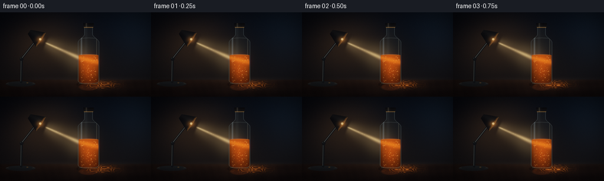
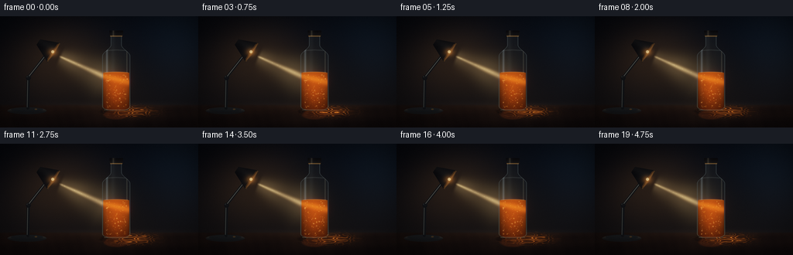
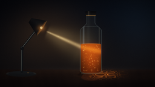
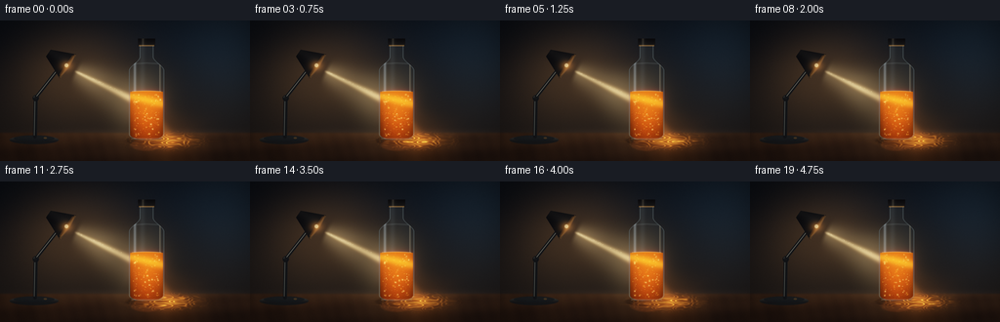
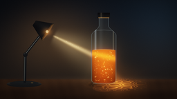
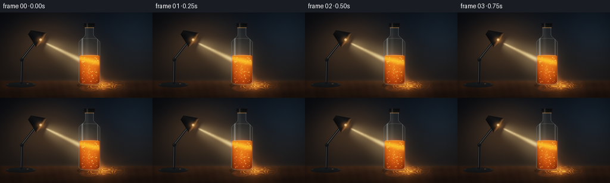

CODING AGENTS AS PIXEL WORLD MODELS
traex/DeepSeek-V4.1-Flash · phygen_050
点击播放 · 原生 RGB 像素
逐轮保存的候选
回放视频、检查图与代码变化。
每份候选均可单独播放。实际图片检查记录在下方工具轨迹中。
候选 01播放与检查图
点击播放 · 原生 RGB 像素


展开代码变化
--- 上一保存版本 +++ 本次保存版本 @@ -0,0 +1,430 @@ +from pathlib import Path + +import numpy as np +from PIL import Image +from scipy.ndimage import gaussian_filter + +import artifact_io + + +ROOT = Path(__file__).resolve().parent +W, H = 1024, 576 +FRAMES, FPS = 20, 4.0 + + +def clamp01(value): + return np.clip(value, 0.0, 1.0) + + +def smoothstep(edge0, edge1, value): + t = clamp01((value - edge0) / (edge1 - edge0)) + return t * t * (3.0 - 2.0 * t) + + +def mix(a, b, t): + t = np.asarray(t) + if t.ndim == 2: + t = t[..., None] + return a * (1.0 - t) + b * t + + +def screen(base, light): + return 1.0 - (1.0 - base) * (1.0 - light) + + +def over(base, color, alpha): + if np.asarray(alpha).ndim == 2: + alpha = np.asarray(alpha)[..., None] + return base * (1.0 - alpha) + np.asarray(color) * alpha + + +def segment_field(x, y, x0, y0, x1, y1): + vx, vy = x1 - x0, y1 - y0 + denom = vx * vx + vy * vy + t = clamp01(((x - x0) * vx + (y - y0) * vy) / denom) + px, py = x0 + t * vx, y0 + t * vy + return np.hypot(x - px, y - py), t + + +def beam_field(x, y, x0, y0, x1, y1, w0, w1, glow_scale=5.0): + distance, t = segment_field(x, y, x0, y0, x1, y1) + width = w0 + (w1 - w0) * t + core = np.exp(-((distance / width) ** 2) * 1.6) + glow = np.exp(-((distance / (width * glow_scale)) ** 2) * 1.2) + return core, glow, t + + +def ellipse_mask(x, y, cx, cy, rx, ry, feather=1.0): + radius = np.sqrt(((x - cx) / rx) ** 2 + ((y - cy) / ry) ** 2) + return smoothstep(1.0 + feather / max(rx, ry), 1.0 - feather / max(rx, ry), radius) + + +def line_mask(x, y, x0, y0, x1, y1, width, feather=1.0): + distance, _ = segment_field(x, y, x0, y0, x1, y1) + return smoothstep(width + feather, max(0.0, width - feather), distance) + + +def bottle_width(y): + width = np.zeros_like(y) + neck = (y >= 102) & (y < 148) + width[neck] = 28.0 + shoulder_t = clamp01((y - 148.0) / 57.0) + shoulder = (y >= 148) & (y < 205) + width[shoulder] = 28.0 + 44.0 * shoulder_t[shoulder] ** 2 * ( + 3.0 - 2.0 * shoulder_t[shoulder] + ) + width[(y >= 205) & (y <= 466)] = 72.0 + bottom = (y > 466) & (y <= 490) + width[bottom] = 72.0 * np.sqrt(np.maximum(0.0, 1.0 - ((y[bottom] - 466.0) / 24.0) ** 2)) + return width + + +def make_background(x, y, frame_t): + wall = mix( + np.array([0.013, 0.022, 0.034], dtype=np.float32), + np.array([0.055, 0.049, 0.047], dtype=np.float32), + smoothstep(40, 470, y), + ) + wall += np.array([0.010, 0.018, 0.026], dtype=np.float32) * np.exp( + -(((x - 820) / 430) ** 2 + ((y - 90) / 260) ** 2) + )[..., None] + + table_mask = smoothstep(454, 466, y) + grain = ( + 0.55 + + 0.18 * np.sin(x * 0.031 + 1.7 * np.sin(x * 0.009)) + + 0.12 * np.sin(y * 0.09 + x * 0.006) + + 0.08 * np.sin(x * 0.11 - y * 0.03) + ) + table = np.empty((H, W, 3), dtype=np.float32) + table[:] = np.array([0.075, 0.045, 0.029], dtype=np.float32) + table *= (0.70 + 0.42 * grain)[..., None] + table *= (1.0 - 0.33 * smoothstep(465, 576, y))[..., None] + table += np.array([0.012, 0.008, 0.006], dtype=np.float32) * np.exp( + -(((x - 640) / 390) ** 2 + ((y - 510) / 42) ** 2) + )[..., None] + image = mix(wall, table, table_mask) + + horizon_glow = np.exp(-(((x - 590) / 420) ** 2 + ((y - 461) / 17) ** 2)) + image += np.array([0.030, 0.021, 0.016], dtype=np.float32) * horizon_glow[..., None] + + # Soft bounce from the lamp and a cool rim from the room. + lamp_haze = np.exp(-(((x - 305) / 250) ** 2 + ((y - 212) / 180) ** 2)) + image += np.array([0.120, 0.071, 0.032], dtype=np.float32) * lamp_haze[..., None] + image += np.array([0.020, 0.034, 0.048], dtype=np.float32) * np.exp( + -(((x - 945) / 185) ** 2 + ((y - 120) / 240) ** 2) + )[..., None] + + image *= (0.93 + 0.015 * np.sin(frame_t * 0.8 + x * 0.003))[..., None] + return image + + +def add_air_beam(image, x, y, t): + core, glow, along = beam_field(x, y, 302, 205, 529, 307, 5.5, 16.0, 6.0) + fade = smoothstep(0.0, 0.08, along) * (0.88 + 0.12 * np.sin(t * 1.7 + along * 8.0)) + light = (core * 0.72 + glow * 0.24) * fade + beam_color = np.array([1.00, 0.76, 0.43], dtype=np.float32) + image[:] = screen(image, light[..., None] * beam_color) + + # A faint fan of stray light makes the narrow beam feel volumetric. + _, fan_glow, _ = beam_field(x, y, 300, 206, 600, 390, 34.0, 95.0, 2.0) + fan = fan_glow * 0.022 * smoothstep(0.0, 0.2, along) + image += fan[..., None] * np.array([0.75, 0.49, 0.24], dtype=np.float32) + return image + + +def add_caustic(image, x, y, t): + cx, cy = 681.0, 493.0 + u = (x - cx) / 113.0 + v = (y - cy) / 26.0 + pool = np.exp(-(u * u + v * v) * 1.65) + + phase = ( + 8.3 * u + + 2.1 * np.sin(5.0 * v + 0.7 * t) + + 1.4 * np.sin(9.0 * u - 0.6 * t) + + 0.8 * np.cos(15.0 * u * v) + ) + ribbons = (0.5 + 0.5 * np.cos(phase * 2.1)) ** 7 + cross = (0.5 + 0.5 * np.cos(19.0 * u - 3.2 * v + 0.4 * t)) ** 9 + caustic = pool * (0.16 + 1.25 * ribbons + 0.52 * cross * ribbons) + + image += caustic[..., None] * np.array([0.92, 0.35, 0.055], dtype=np.float32) + image += (pool * 0.055)[..., None] * np.array([0.50, 0.18, 0.035], dtype=np.float32) + + fringe = pool * (0.5 + 0.5 * np.cos(phase * 2.1 + 1.2)) ** 10 + image += (fringe * 0.15)[..., None] * np.array([0.45, 0.12, 0.02], dtype=np.float32) + + # The bottle interrupts a little of the pool and leaves a soft contact shadow. + shadow = ellipse_mask(x, y, 600, 492, 86, 20, 10.0) + image *= (1.0 - 0.27 * shadow)[..., None] + image += np.array([0.095, 0.027, 0.006], dtype=np.float32) * ellipse_mask( + x, y, 600, 509, 63, 25, 10.0 + )[..., None] + return image + + +def add_bottle(image, x, y, t): + dx = x - 600.0 + width = bottle_width(y) + outer = clamp01(width - np.abs(dx) + 0.8) + outer *= (y >= 101) & (y <= 490) + edge_distance = np.abs(np.abs(dx) - width) + edge = np.exp(-(edge_distance / 2.4) ** 2) * outer + + # Clear glass: nearly transparent center, cool edge and warm bounce. + glass_alpha = outer * 0.055 + edge * 0.48 + glass_color = mix( + np.array([0.36, 0.43, 0.45], dtype=np.float32), + np.array([0.52, 0.50, 0.40], dtype=np.float32), + smoothstep(260, 480, y), + ) + image[:] = over(image, glass_color, glass_alpha) + + # Transparent vertical highlights. + h_left = np.exp(-((dx + 48.0) / 5.2) ** 2) * outer + h_right = np.exp(-((dx - 55.0) / 2.8) ** 2) * outer + h_center = np.exp(-((dx + 17.0) / 11.0) ** 2) * outer * 0.35 + image += (h_left * 0.22)[..., None] * np.array([0.62, 0.75, 0.82], dtype=np.float32) + image += (h_right * 0.15)[..., None] * np.array([0.72, 0.69, 0.57], dtype=np.float32) + image += (h_center * 0.10)[..., None] * np.array([0.54, 0.66, 0.72], dtype=np.float32) + + # The liquid has a curved meniscus and a slightly inset edge. + level = 288.0 + 3.3 * clamp01(np.abs(dx) / 64.0) ** 2 + inner_width = np.maximum(0.0, width - 5.0) + liquid = clamp01(inner_width - np.abs(dx) + 0.8) + liquid *= smoothstep(level - 0.7, level + 1.1, y) * smoothstep(487, 482, y) + depth = clamp01((y - 286.0) / 198.0) + juice = mix( + np.array([0.63, 0.205, 0.025], dtype=np.float32), + np.array([0.16, 0.035, 0.006], dtype=np.float32), + depth * 0.82, + ) + center_glow = np.exp(-(dx / 43.0) ** 2) * np.exp(-((y - 375.0) / 112.0) ** 2) + juice += center_glow[..., None] * np.array([0.28, 0.075, 0.007], dtype=np.float32) + juice *= (1.0 - 0.24 * smoothstep(44, 68, np.abs(dx)))[..., None] + image[:] = over(image, juice, liquid * 0.94) + + # Light refracted through the juice. + inside_core, inside_glow, _ = beam_field(x, y, 535, 310, 663, 340, 17.0, 21.0, 5.0) + inside = (inside_core * 0.58 + inside_glow * 0.19) * liquid + image += inside[..., None] * np.array([0.92, 0.34, 0.045], dtype=np.float32) + + # Fine interference ribbons suspended in the liquid. + u = dx / 65.0 + v = (y - 383.0) / 102.0 + phase = ( + 7.4 * np.sin(8.5 * u + 0.55 * t) + + 5.3 * np.cos(9.0 * v - 0.40 * t) + + 4.1 * np.sin(11.0 * (u + 0.45 * v) + 0.25 * t) + ) + filaments = (0.5 + 0.5 * np.cos(phase * 2.25)) ** 10 + liquid_lens = np.exp(-(u * u * 1.2 + v * v * 0.9)) * liquid + image += (filaments * liquid_lens * 0.16)[..., None] * np.array( + [1.00, 0.46, 0.075], dtype=np.float32 + ) + + meniscus = np.exp(-((y - level) / 1.8) ** 2) * clamp01(61.0 - np.abs(dx)) + image += (meniscus * 0.28)[..., None] * np.array([1.00, 0.62, 0.20], dtype=np.float32) + + # A polished base ring and shoulder reflection make the glass readable. + base_ring = np.exp(-((y - 484.0) / 2.8) ** 2) * clamp01(64.0 - np.abs(dx)) + image += (base_ring * 0.20)[..., None] * np.array([0.68, 0.60, 0.47], dtype=np.float32) + shoulder = np.exp(-((y - 174.0 - 0.055 * np.abs(dx)) / 2.5) ** 2) * outer + image += (shoulder * 0.11)[..., None] * np.array([0.60, 0.68, 0.68], dtype=np.float32) + + # Black screw cap with a thin warm metal collar. + cap_x = np.abs(dx) + cap = (cap_x <= 35.0) & (y >= 74) & (y <= 103) + cap_mask = cap.astype(np.float32) + cap_shade = 0.025 + 0.030 * smoothstep(74, 102, y) + 0.018 * np.exp(-((dx + 14) / 12) ** 2) + image[:] = over(image, np.stack([cap_shade * 1.05, cap_shade, cap_shade * 0.92], -1), cap_mask) + collar = (cap_x <= 31.0) & (y >= 100) & (y <= 105) + image += collar[..., None] * np.array([0.32, 0.20, 0.075], dtype=np.float32) + cap_highlight = np.exp(-((dx + 15.0) / 4.0) ** 2) * cap + image += (cap_highlight * 0.16)[..., None] * np.array([0.60, 0.54, 0.43], dtype=np.float32) + return image + + +def add_particles(image, x, y, t): + rng = np.random.default_rng(1907) + count = 105 + base_x = rng.uniform(548, 652, count) + base_y = rng.uniform(302, 475, count) + radii = rng.uniform(0.65, 2.25, count) + phases = rng.uniform(0, 2.0 * np.pi, count) + speeds = rng.uniform(0.5, 1.4, count) + colors = rng.uniform(0.0, 1.0, count) + + glow = np.zeros((H, W), dtype=np.float32) + pale = np.zeros((H, W), dtype=np.float32) + for i in range(count): + px = ( + base_x[i] + + 3.8 * np.sin(0.66 * t + phases[i]) + + 1.4 * np.sin(0.23 * t + 1.9 * phases[i]) + ) + py = ( + base_y[i] + + 3.1 * np.cos(0.48 * t * speeds[i] + phases[i]) + - 1.8 * np.sin(0.17 * t + phases[i]) + ) + radius = radii[i] * (1.0 + 0.10 * np.sin(t * 1.3 + phases[i])) + x0, x1 = max(0, int(px - 8)), min(W, int(px + 9)) + y0, y1 = max(0, int(py - 8)), min(H, int(py + 9)) + if x1 <= x0 or y1 <= y0: + continue + yy, xx = np.mgrid[y0:y1, x0:x1] + dot = np.exp(-(((xx - px) ** 2 + (yy - py) ** 2) / (radius * radius * 1.6))) + pulse = 0.56 + 0.44 * np.sin(t * 1.1 + phases[i]) ** 2 + glow[y0:y1, x0:x1] += dot * pulse + pale[y0:y1, x0:x1] += dot * (colors[i] ** 2) * pulse + + dx = x - 600.0 + width = bottle_width(y) + liquid = clamp01(width - 7.0 - np.abs(dx) + 0.8) + liquid *= (y > 292) & (y < 482) + glow *= liquid + pale *= liquid + image += (glow * 0.40)[..., None] * np.array([1.00, 0.43, 0.055], dtype=np.float32) + image += (pale * 0.46)[..., None] * np.array([1.00, 0.82, 0.49], dtype=np.float32) + return image + + +def add_lamp(image, x, y, t): + # Base and articulated arm. + base_outer = ellipse_mask(x, y, 139, 489, 101, 18, 3.0) + base_inner = ellipse_mask(x, y, 139, 483, 84, 13, 2.0) + image[:] = over(image, np.array([0.030, 0.035, 0.038], np.float32), base_outer) + image += base_outer[..., None] * np.array([0.11, 0.10, 0.085], np.float32) * ( + 0.3 + 0.7 * smoothstep(496, 478, y) + )[..., None] + image[:] = over(image, np.array([0.060, 0.068, 0.071], np.float32), base_inner * 0.82) + + column = line_mask(x, y, 143, 475, 146, 319, 8.0, 1.2) + image[:] = over(image, np.array([0.050, 0.056, 0.058], np.float32), column) + column_hi = line_mask(x, y, 140.0, 470, 143.0, 325, 1.1, 0.8) + image += column_hi[..., None] * np.array([0.28, 0.29, 0.26], np.float32) + + joint = ellipse_mask(x, y, 146, 318, 13, 13, 1.4) + image[:] = over(image, np.array([0.045, 0.049, 0.050], np.float32), joint) + image += ellipse_mask(x, y, 143, 314, 5.0, 5.0, 1.0)[..., None] * np.array( + [0.24, 0.24, 0.21], np.float32 + ) + + arm = line_mask(x, y, 146, 316, 249, 184, 7.0, 1.2) + image[:] = over(image, np.array([0.055, 0.060, 0.061], np.float32), arm) + arm_hi = line_mask(x, y, 150, 309, 245, 189, 1.2, 0.8) + image += arm_hi[..., None] * np.array([0.35, 0.34, 0.29], np.float32) + elbow = ellipse_mask(x, y, 250, 184, 12, 12, 1.3) + image[:] = over(image, np.array([0.040, 0.044, 0.045], np.float32), elbow) + + # Oriented conical shade, aimed through the bottle. + cx, cy = 252.0, 170.0 + direction = np.array([0.827, 0.562], dtype=np.float32) + direction /= np.linalg.norm(direction) + normal = np.array([-direction[1], direction[0]], dtype=np.float32) + rx, ry = x - cx, y - cy + u = rx * direction[0] + ry * direction[1] + v = rx * normal[0] + ry * normal[1] + front_t = clamp01((u + 66.0) / 97.0) + half = 17.0 + 43.0 * front_t + shade = (u > -66.0) & (u < 31.0) & (np.abs(v) < half) + shade_mask = shade.astype(np.float32) + shade_tone = ( + 0.025 + + 0.022 * smoothstep(-55, 25, u) + + 0.020 * np.exp(-((v + 13.0) / 20.0) ** 2) + ) + shade_color = np.stack( + [shade_tone * 1.08, shade_tone * 1.06, shade_tone * 1.00], axis=-1 + ) + image[:] = over(image, shade_color, shade_mask) + + # Warm inner rim and the visible lamp bulb. + front_rim = np.exp(-((u - 29.0) / 3.2) ** 2) * (np.abs(v) < 57.0) + image += (front_rim * 0.28)[..., None] * np.array([0.78, 0.43, 0.13], np.float32) + opening = ((u - 25.0) / 13.0) ** 2 + (v / 52.0) ** 2 + inner = clamp01((1.03 - opening) * 4.0) * (u > 20.0) + image += (inner * 0.13)[..., None] * np.array([1.00, 0.45, 0.10], np.float32) + bulb = ellipse_mask(x, y, cx + direction[0] * 24, cy + direction[1] * 24, 8.0, 8.0, 1.5) + image += bulb[..., None] * np.array([1.00, 0.83, 0.52], np.float32) * 0.72 + image += ( + np.exp(-(((x - 272.0) / 24.0) ** 2 + ((y - 186.0) / 19.0) ** 2))[..., None] + * np.array([0.38, 0.19, 0.055], np.float32) + * (0.96 + 0.04 * np.sin(t * 2.1)) + ) + + # Small metal switch on the base. + switch = ellipse_mask(x, y, 185, 481, 7, 4, 0.8) + image[:] = over(image, np.array([0.27, 0.19, 0.10], np.float32), switch * 0.8) + return image + + +def add_dust(image, x, y, t): + rng = np.random.default_rng(814) + count = 28 + base = rng.uniform(0.10, 0.95, count) + lateral = rng.uniform(-1.0, 1.0, count) + phases = rng.uniform(0.0, 2.0 * np.pi, count) + specks = np.zeros((H, W), dtype=np.float32) + for i in range(count): + along = base[i] + px = 302 + (529 - 302) * along + lateral[i] * 22 + 1.4 * np.sin(t + phases[i]) + py = 205 + (307 - 205) * along + lateral[i] * 13 + 1.2 * np.cos(t * 0.8 + phases[i]) + x0, x1 = max(0, int(px - 5)), min(W, int(px + 6)) + y0, y1 = max(0, int(py - 5)), min(H, int(py + 6)) + yy, xx = np.mgrid[y0:y1, x0:x1] + specks[y0:y1, x0:x1] += np.exp( + -(((xx - px) ** 2 + (yy - py) ** 2) / 1.7) + ) * (0.50 + 0.50 * np.sin(t * 1.5 + phases[i]) ** 2) + image += (specks * 0.25)[..., None] * np.array([1.00, 0.79, 0.48], np.float32) + return image + + +def finish_frame(image, x, y, frame_index): + # Bloom keeps the beam and the tiny suspended particles luminous at final size. + highlights = np.maximum(image - 0.46, 0.0) + bloom = gaussian_filter(highlights, sigma=(7.0, 7.0, 0.0)) + wide_bloom = gaussian_filter(highlights, sigma=(22.0, 22.0, 0.0)) + image += bloom * 0.34 + wide_bloom * 0.16 + + # Gentle highlight compression and cool shadow grade. + image = 1.0 - np.exp(-image * 1.24) + luminance = np.sum(image * np.array([0.2126, 0.7152, 0.0722], np.float32), axis=-1) + image = mix(image, luminance[..., None], 0.06) + image[..., 2] += (1.0 - smoothstep(0.0, 0.22, luminance)) * 0.012 + + radius = np.sqrt(((x - W * 0.53) / (W * 0.68)) ** 2 + ((y - H * 0.51) / (H * 0.69)) ** 2) + vignette = 1.0 - 0.44 * smoothstep(0.45, 1.15, radius) + image *= vignette[..., None] + + rng = np.random.default_rng(4000 + frame_index) + noise = rng.normal(0.0, 0.0045, (H, W, 1)).astype(np.float32) + image += noise + return np.clip(image * 255.0 + 0.5, 0, 255).astype(np.uint8) + + +def render_frame(frame_index): + t = frame_index / FPS + yy, xx = np.mgrid[0:H, 0:W].astype(np.float32) + image = make_background(xx, yy, t) + image = add_air_beam(image, xx, yy, t) + image = add_caustic(image, xx, yy, t) + image = add_bottle(image, xx, yy, t) + image = add_particles(image, xx, yy, t) + image = add_lamp(image, xx, yy, t) + image = add_dust(image, xx, yy, t) + frame = finish_frame(image, xx, yy, frame_index) + return np.asarray( + Image.fromarray(frame).resize((256, 144), Image.Resampling.LANCZOS) + ) + + +def main(): + frames = np.stack([render_frame(i) for i in range(FRAMES)]) + artifact_io.save(frames, ROOT) + + +if __name__ == "__main__": + main()
候选 02播放与检查图
点击播放 · 原生 RGB 像素
展开代码变化
--- 上一保存版本
+++ 本次保存版本
@@ -81,11 +81,11 @@
def make_background(x, y, frame_t):
wall = mix(
- np.array([0.013, 0.022, 0.034], dtype=np.float32),
- np.array([0.055, 0.049, 0.047], dtype=np.float32),
+ np.array([0.022, 0.036, 0.050], dtype=np.float32),
+ np.array([0.086, 0.072, 0.061], dtype=np.float32),
smoothstep(40, 470, y),
)
- wall += np.array([0.010, 0.018, 0.026], dtype=np.float32) * np.exp(
+ wall += np.array([0.018, 0.028, 0.039], dtype=np.float32) * np.exp(
-(((x - 820) / 430) ** 2 + ((y - 90) / 260) ** 2)
)[..., None]
@@ -97,8 +97,8 @@
+ 0.08 * np.sin(x * 0.11 - y * 0.03)
)
table = np.empty((H, W, 3), dtype=np.float32)
- table[:] = np.array([0.075, 0.045, 0.029], dtype=np.float32)
- table *= (0.70 + 0.42 * grain)[..., None]
+ table[:] = np.array([0.155, 0.087, 0.047], dtype=np.float32)
+ table *= (0.72 + 0.44 * grain)[..., None]
table *= (1.0 - 0.33 * smoothstep(465, 576, y))[..., None]
table += np.array([0.012, 0.008, 0.006], dtype=np.float32) * np.exp(
-(((x - 640) / 390) ** 2 + ((y - 510) / 42) ** 2)
@@ -106,12 +106,12 @@
image = mix(wall, table, table_mask)
horizon_glow = np.exp(-(((x - 590) / 420) ** 2 + ((y - 461) / 17) ** 2))
- image += np.array([0.030, 0.021, 0.016], dtype=np.float32) * horizon_glow[..., None]
+ image += np.array([0.050, 0.031, 0.019], dtype=np.float32) * horizon_glow[..., None]
# Soft bounce from the lamp and a cool rim from the room.
lamp_haze = np.exp(-(((x - 305) / 250) ** 2 + ((y - 212) / 180) ** 2))
- image += np.array([0.120, 0.071, 0.032], dtype=np.float32) * lamp_haze[..., None]
- image += np.array([0.020, 0.034, 0.048], dtype=np.float32) * np.exp(
+ image += np.array([0.175, 0.101, 0.043], dtype=np.float32) * lamp_haze[..., None]
+ image += np.array([0.027, 0.045, 0.061], dtype=np.float32) * np.exp(
-(((x - 945) / 185) ** 2 + ((y - 120) / 240) ** 2)
)[..., None]
@@ -120,16 +120,20 @@
def add_air_beam(image, x, y, t):
- core, glow, along = beam_field(x, y, 302, 205, 529, 307, 5.5, 16.0, 6.0)
+ core, glow, along = beam_field(x, y, 302, 205, 552, 327, 5.5, 18.0, 6.0)
fade = smoothstep(0.0, 0.08, along) * (0.88 + 0.12 * np.sin(t * 1.7 + along * 8.0))
- light = (core * 0.72 + glow * 0.24) * fade
+ light = (core * 0.90 + glow * 0.33) * fade
beam_color = np.array([1.00, 0.76, 0.43], dtype=np.float32)
image[:] = screen(image, light[..., None] * beam_color)
# A faint fan of stray light makes the narrow beam feel volumetric.
_, fan_glow, _ = beam_field(x, y, 300, 206, 600, 390, 34.0, 95.0, 2.0)
- fan = fan_glow * 0.022 * smoothstep(0.0, 0.2, along)
- image += fan[..., None] * np.array([0.75, 0.49, 0.24], dtype=np.float32)
+ fan = fan_glow * 0.038 * smoothstep(0.0, 0.2, along)
+ image += fan[..., None] * np.array([0.82, 0.52, 0.24], dtype=np.float32)
+
+ exit_core, exit_glow, exit_t = beam_field(x, y, 620, 360, 690, 488, 11.0, 37.0, 3.4)
+ exit_light = (exit_core * 0.28 + exit_glow * 0.11) * smoothstep(0.0, 0.12, exit_t)
+ image += exit_light[..., None] * np.array([1.00, 0.40, 0.065], dtype=np.float32)
return image
@@ -147,13 +151,13 @@
)
ribbons = (0.5 + 0.5 * np.cos(phase * 2.1)) ** 7
cross = (0.5 + 0.5 * np.cos(19.0 * u - 3.2 * v + 0.4 * t)) ** 9
- caustic = pool * (0.16 + 1.25 * ribbons + 0.52 * cross * ribbons)
-
- image += caustic[..., None] * np.array([0.92, 0.35, 0.055], dtype=np.float32)
- image += (pool * 0.055)[..., None] * np.array([0.50, 0.18, 0.035], dtype=np.float32)
+ caustic = pool * (0.34 + 2.15 * ribbons + 0.88 * cross * ribbons)
+
+ image += caustic[..., None] * np.array([1.00, 0.42, 0.065], dtype=np.float32)
+ image += (pool * 0.10)[..., None] * np.array([0.72, 0.25, 0.035], dtype=np.float32)
fringe = pool * (0.5 + 0.5 * np.cos(phase * 2.1 + 1.2)) ** 10
- image += (fringe * 0.15)[..., None] * np.array([0.45, 0.12, 0.02], dtype=np.float32)
+ image += (fringe * 0.26)[..., None] * np.array([0.62, 0.15, 0.02], dtype=np.float32)
# The bottle interrupts a little of the pool and leaves a soft contact shadow.
shadow = ellipse_mask(x, y, 600, 492, 86, 20, 10.0)
@@ -173,7 +177,7 @@
edge = np.exp(-(edge_distance / 2.4) ** 2) * outer
# Clear glass: nearly transparent center, cool edge and warm bounce.
- glass_alpha = outer * 0.055 + edge * 0.48
+ glass_alpha = outer * 0.07 + edge * 0.58
glass_color = mix(
np.array([0.36, 0.43, 0.45], dtype=np.float32),
np.array([0.52, 0.50, 0.40], dtype=np.float32),
@@ -185,9 +189,9 @@
h_left = np.exp(-((dx + 48.0) / 5.2) ** 2) * outer
h_right = np.exp(-((dx - 55.0) / 2.8) ** 2) * outer
h_center = np.exp(-((dx + 17.0) / 11.0) ** 2) * outer * 0.35
- image += (h_left * 0.22)[..., None] * np.array([0.62, 0.75, 0.82], dtype=np.float32)
- image += (h_right * 0.15)[..., None] * np.array([0.72, 0.69, 0.57], dtype=np.float32)
- image += (h_center * 0.10)[..., None] * np.array([0.54, 0.66, 0.72], dtype=np.float32)
+ image += (h_left * 0.31)[..., None] * np.array([0.72, 0.84, 0.90], dtype=np.float32)
+ image += (h_right * 0.23)[..., None] * np.array([0.85, 0.78, 0.60], dtype=np.float32)
+ image += (h_center * 0.15)[..., None] * np.array([0.64, 0.76, 0.82], dtype=np.float32)
# The liquid has a curved meniscus and a slightly inset edge.
level = 288.0 + 3.3 * clamp01(np.abs(dx) / 64.0) ** 2
@@ -196,19 +200,19 @@
liquid *= smoothstep(level - 0.7, level + 1.1, y) * smoothstep(487, 482, y)
depth = clamp01((y - 286.0) / 198.0)
juice = mix(
- np.array([0.63, 0.205, 0.025], dtype=np.float32),
- np.array([0.16, 0.035, 0.006], dtype=np.float32),
+ np.array([0.90, 0.285, 0.032], dtype=np.float32),
+ np.array([0.30, 0.058, 0.006], dtype=np.float32),
depth * 0.82,
)
center_glow = np.exp(-(dx / 43.0) ** 2) * np.exp(-((y - 375.0) / 112.0) ** 2)
- juice += center_glow[..., None] * np.array([0.28, 0.075, 0.007], dtype=np.float32)
+ juice += center_glow[..., None] * np.array([0.46, 0.115, 0.008], dtype=np.float32)
juice *= (1.0 - 0.24 * smoothstep(44, 68, np.abs(dx)))[..., None]
- image[:] = over(image, juice, liquid * 0.94)
+ image[:] = over(image, juice, liquid * 0.97)
# Light refracted through the juice.
inside_core, inside_glow, _ = beam_field(x, y, 535, 310, 663, 340, 17.0, 21.0, 5.0)
- inside = (inside_core * 0.58 + inside_glow * 0.19) * liquid
- image += inside[..., None] * np.array([0.92, 0.34, 0.045], dtype=np.float32)
+ inside = (inside_core * 0.88 + inside_glow * 0.30) * liquid
+ image += inside[..., None] * np.array([1.00, 0.40, 0.045], dtype=np.float32)
# Fine interference ribbons suspended in the liquid.
u = dx / 65.0
@@ -220,12 +224,12 @@
)
filaments = (0.5 + 0.5 * np.cos(phase * 2.25)) ** 10
liquid_lens = np.exp(-(u * u * 1.2 + v * v * 0.9)) * liquid
- image += (filaments * liquid_lens * 0.16)[..., None] * np.array(
+ image += (filaments * liquid_lens * 0.27)[..., None] * np.array(
[1.00, 0.46, 0.075], dtype=np.float32
)
meniscus = np.exp(-((y - level) / 1.8) ** 2) * clamp01(61.0 - np.abs(dx))
- image += (meniscus * 0.28)[..., None] * np.array([1.00, 0.62, 0.20], dtype=np.float32)
+ image += (meniscus * 0.42)[..., None] * np.array([1.00, 0.65, 0.20], dtype=np.float32)
# A polished base ring and shoulder reflection make the glass readable.
base_ring = np.exp(-((y - 484.0) / 2.8) ** 2) * clamp01(64.0 - np.abs(dx))
@@ -286,8 +290,8 @@
liquid *= (y > 292) & (y < 482)
glow *= liquid
pale *= liquid
- image += (glow * 0.40)[..., None] * np.array([1.00, 0.43, 0.055], dtype=np.float32)
- image += (pale * 0.46)[..., None] * np.array([1.00, 0.82, 0.49], dtype=np.float32)
+ image += (glow * 0.72)[..., None] * np.array([1.00, 0.46, 0.060], dtype=np.float32)
+ image += (pale * 0.78)[..., None] * np.array([1.00, 0.86, 0.54], dtype=np.float32)
return image
@@ -378,7 +382,7 @@
specks[y0:y1, x0:x1] += np.exp(
-(((xx - px) ** 2 + (yy - py) ** 2) / 1.7)
) * (0.50 + 0.50 * np.sin(t * 1.5 + phases[i]) ** 2)
- image += (specks * 0.25)[..., None] * np.array([1.00, 0.79, 0.48], np.float32)
+ image += (specks * 0.37)[..., None] * np.array([1.00, 0.79, 0.48], np.float32)
return image
@@ -390,13 +394,13 @@
image += bloom * 0.34 + wide_bloom * 0.16
# Gentle highlight compression and cool shadow grade.
- image = 1.0 - np.exp(-image * 1.24)
+ image = 1.0 - np.exp(-image * 1.42)
luminance = np.sum(image * np.array([0.2126, 0.7152, 0.0722], np.float32), axis=-1)
image = mix(image, luminance[..., None], 0.06)
image[..., 2] += (1.0 - smoothstep(0.0, 0.22, luminance)) * 0.012
radius = np.sqrt(((x - W * 0.53) / (W * 0.68)) ** 2 + ((y - H * 0.51) / (H * 0.69)) ** 2)
- vignette = 1.0 - 0.44 * smoothstep(0.45, 1.15, radius)
+ vignette = 1.0 - 0.34 * smoothstep(0.45, 1.15, radius)
image *= vignette[..., None]
rng = np.random.default_rng(4000 + frame_index)
候选 03播放与检查图
点击播放 · 原生 RGB 像素

展开代码变化
代码未变化；重新保存了产物。
可观测工具轨迹
实际执行的命令与返回图片。
命令 1exit 0
/bin/bash -c "pwd && rg --files -g 'prompt.txt' -g 'GENERATION_RULES.md' -g 'task_spec.json' -g '"'!**/.git/**'"'"
命令 2exit 0
/bin/bash -c 'ls -la'
命令 3exit 0
/bin/bash -c 'git status --short'
命令 4exit 0
/bin/bash -c 'cat GENERATION_RULES.md'
命令 5exit 0
/bin/bash -c 'cat task_spec.json'
命令 6exit 0
/bin/bash -c 'cat prompt.txt'
命令 7exit 0
/bin/bash -c "sed -n '1,260p' artifact_io.py"
命令 8exit 0
/bin/bash -c "sed -n '1,260p' player_template.html"
命令 9exit 0
/bin/bash -c "python - <<'PY'
import numpy, PIL
print('numpy', numpy.__version__)
print('PIL', PIL.__version__)
try:
import scipy
print('scipy', scipy.__version__)
except Exception as e: print('scipy unavailable',e)
PY"命令 10exit 0
/bin/bash -c 'python generate.py'
命令 11exit 0
/bin/bash -c "nl -ba generate.py | sed -n '60,180p'"
命令 12exit 0
/bin/bash -c "nl -ba generate.py | sed -n '180,340p'"
命令 13exit 0
/bin/bash -c "nl -ba generate.py | sed -n '340,500p'"
命令 14exit 0
/bin/bash -c 'python generate.py'
命令 15exit 1
/bin/bash -c "python - <<'PY'
import json
from pathlib import Path
import numpy as np
from PIL import Image
p=Path('.')
frames=np.load(p/'pixels.npz')['pixels']
print('pixels', frames.shape, frames.dtype)
print('frame PNGs', len(list((p/'frames').glob('*.png'))))
print('index bytes', (p/'index.html').stat().st_size)
print('prompt caption', json.loads((p/'index.html').read_text().split('const DATA=',1)[1].split(';function unpack',1)[0])['caption'])
a=np.stack([np.array(Image.open(p/'frames'/f'{i:02d}.png')) for i in range(20)])
print('png array', a.shape, a.dtype)
print('range', int(a.min()), int(a.max()), 'mean', float(a.mean()))
print('distinct first/last', len(np.unique(a[0].reshape(-1,3),axis=0)), len(np.unique(a[-1].reshape(-1,3),axis=0)))
print('changed pixels 0->10', int(np.any(a[0]"'!=a[10],axis=2).sum()))
PY'命令 16exit 0
/bin/bash -c "python - <<'PY'
import re
from pathlib import Path
import numpy as np
from PIL import Image
p=Path('.')
frames=np.load(p/'pixels.npz')['pixels']
a=np.stack([np.array(Image.open(p/'frames'/f'{i:02d}.png')) for i in range(20)])
print('pixels', frames.shape, frames.dtype)
print('png array', a.shape, a.dtype, 'range', int(a.min()), int(a.max()), 'mean', round(float(a.mean()),2))
print('frame PNGs', len(list((p/'frames').glob('*.png'))), 'index bytes', (p/'index.html').stat().st_size)
print('distinct first/last', len(np.unique(a[0].reshape(-1,3),axis=0)), len(np.unique(a[-1].reshape(-1,3),axis=0)))
print('changed pixels 0->10', int(np.any(a[0]"'!=a[10],axis=2).sum()))
print('"'changed pixels 10->19', int(np.any(a[10]"'!=a[19],axis=2).sum()))
html=(p/'"'index.html').read_text()
m=re.search(r'const DATA=(\\{.*?\\});function unpack', html)
print('embedded JSON parse', bool(m and __import__('json').loads(m.group(1))))
PY"命令 17exit 0
/bin/bash -c "python - <<'PY'
import json
from pathlib import Path
html=Path('index.html').read_text()
s=html.index('const DATA=')+len('const DATA=')
obj,end=json.JSONDecoder().raw_decode(html[s:])
print('player data keys:', sorted(obj))
print('frames/deltas/fps/size:', obj['frames'], len(obj['deltas']), obj['fps'], obj['width'], obj['height'])
print('caption:', obj['caption'])
print('json ends before script:', html[s+end:s+end+40])
PY"命令 18exit 0
/bin/bash -c 'ls -lh generate.py index.html pixels.npz inspection.png transition_check.png frames/00.png frames/19.png'
命令 19exit 0
/bin/bash -c 'python -m py_compile generate.py && git status --short -- generate.py frames index.html pixels.npz inspection.png transition_check.png'
视觉工具实际返回图片 1

视觉工具实际返回图片 2

视觉工具实际返回图片 3

视觉工具实际返回图片 4

视觉工具实际返回图片 5

保存候选 3 份；完成命令 19 次；可验证图片返回 5 张。原始 API 响应与完整日志保留在本地。